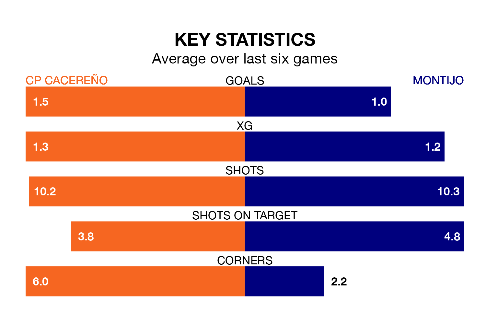

CP Cacereño are heavy favourites to keep all three points at home in Sunday's kick-off against Montijo.
CP Cacereño, who sit 11th in the Segunda División RFEF Group 5 with 29 games played, are priced at 1.5 to seal victory at the Estadio Príncipe Felipe.
Sitting seven places and 15 points behind them in the table, Montijo are 6.0 to win with *Betting Company*, while the draw is at 3.8.
With 25 goals in 29 games so far this season, Montijo are scoring at below the league average rate with 0.9 goals per game. And they are conceding more than average, letting in 47 goals at a rate of 1.6 per game.
CP Cacereño, meanwhile, are above average scorers, with 1.2 goals per game, compared to a league average of 1.1. They have also conceded 1.2 goals per game.
In the last 10 years, CP Cacereño and Montijo have played each other on 10 occasions. CP Cacereño won seven of them, Montijo one, and they drew twice.
On average, CP Cacereño scored 1.6 goals and Montijo 0.5 in those matches.
Their last meeting was on November 26, when CP Cacereño won 1-0 away.
The home team are in mixed form in the Segunda División RFEF Group 5, with three wins and a draw from their last six games.
With a win and a draw over that period, the visitors' form is much worse – they have taken four points from 18, compared to CP Cacereño's 10.
CP Cacereño's last match was on Sunday, a 5-0 loss against Gimnástica Segoviana CF.
Montijo drew 1-1 with Talavera CF last time out, also on March 31, with Víctor Manuel Castaño Terrazas on the scoresheet.
Updated: 16:41 (UTC), 04/04/24